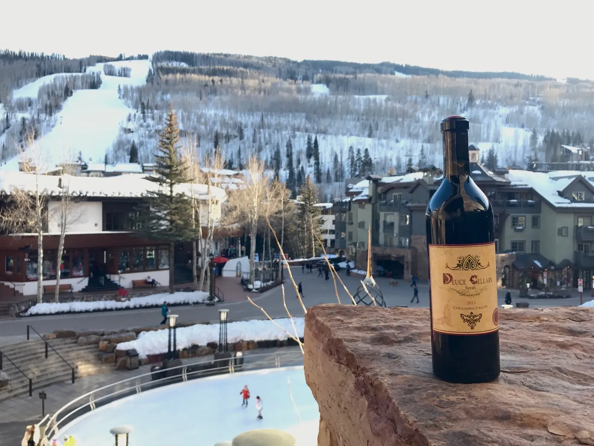
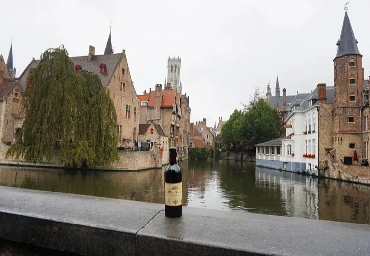
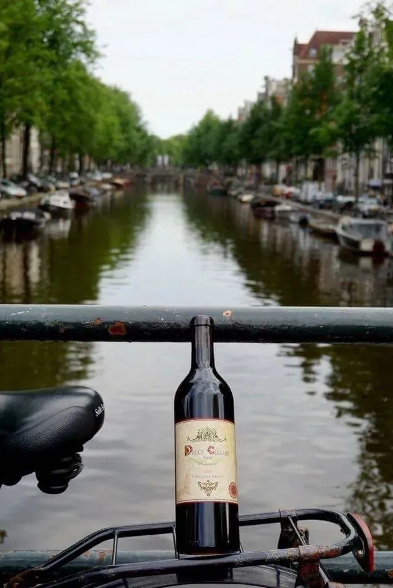
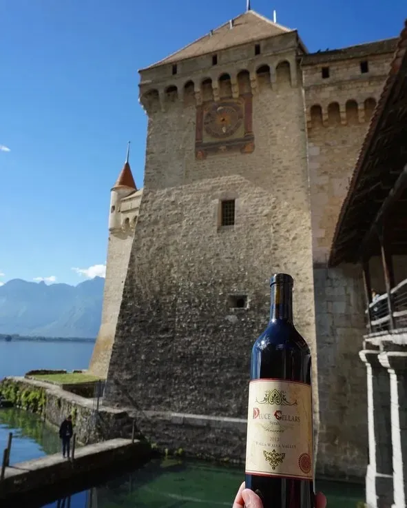
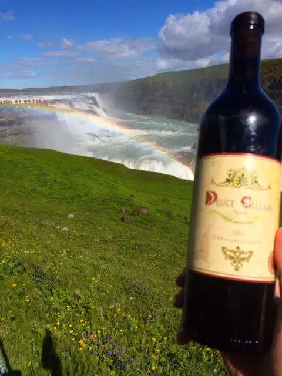
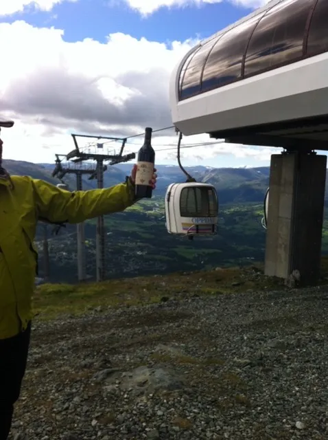
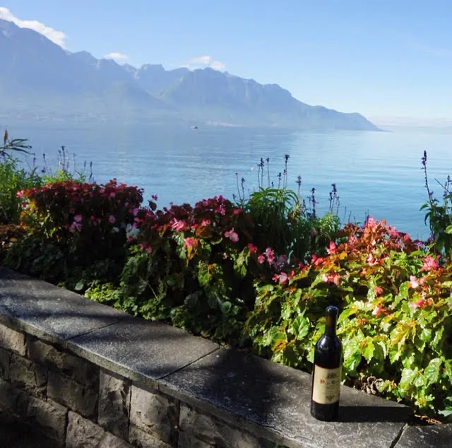
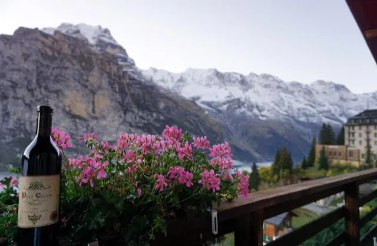
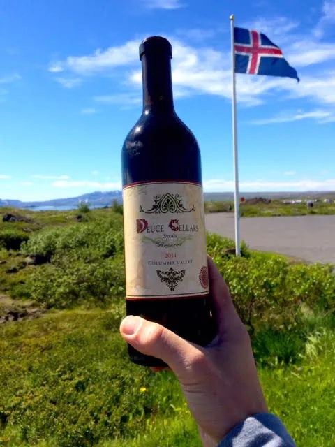
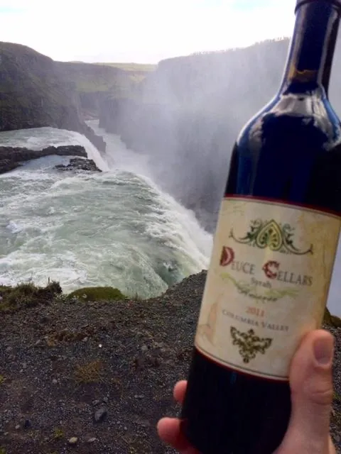

Deuce around the world
The wine that travels.
From Walla Walla to the Swiss Alps, Iceland, Seoul and Times Square. Wherever our friends go, a bottle seems to follow.

















Your turn
Taking Deuce somewhere?
Send us a photo of your bottle on the road and we may add it to the wall.